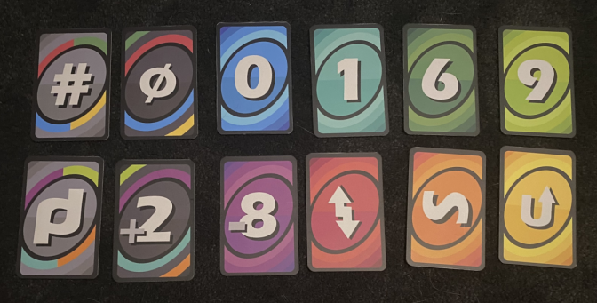
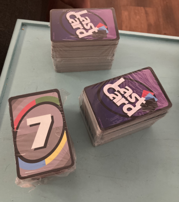

Last Card
About Last Card
Last Card is a playing card game that I designed and printed.
It's a shedding card game similar to Uno where the aim is to remove all the cards from your hand.
I designed the cards in Illustrator and play-tested the game in Tabletop Simulator, and then got them printed to play in real life.

Rules:
The game has 3 piles of cards to keep track of, the deck pile, the discard pile, and the storage pile.
Every round you attempt to discard a card into the discard pile, or draw a card from the deck if you cannot play one.
The storage pile will grow and shrink as other cards cause interactions with it.
You start the game with 7 cards in your hand, an another card is added to the discord before the game starts.
Colours:
There are 10 colours of cards, with 4 basic-coloured cards, 4 between-coloured cards, and 2 wild-coloured cards.
Cards can be played on cards of the same colour or symbol.
The between-coloured cards can be placed on card colours that they are made of, eg: purple cards can be placed on blue and red cards.
Black wild cards allow the user to choose which colour the card will act as, out of the 4 possible colours shown on the card.
Grey wild cards allow the next player to choose what the colour will be.
Symbols:
Draw cards force the next player to draw as many cards as the number listed on the card.
Removal cards force the player to discard as many cards as the number listed on the card to the storage pile.
There are numbered cards from 0 - 9 that have no special effects, and minus cards that act as any number.
Plus cards force the next player to draw cards until they draw something they can play.
Hash cards make the next player draw a maximum of 8 cards from the storage pile, but less than that if the pile doesn't have that many.
Reverse cards flip the game order to be either clockwise or anticlockwise depending on the current order.
Skip cards skip the next player's turn, and replay cards skip everyone's turn giving you another turn.
Swap cards allow you to force another player to swap hands with you, and vortex cards for every player to swap hands in the current turn order.
